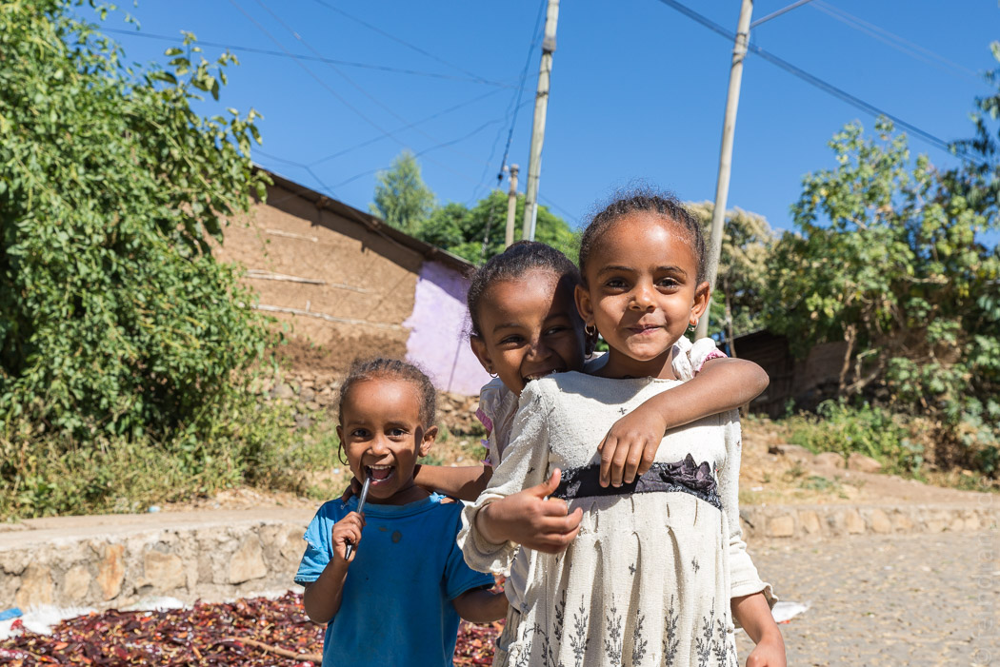
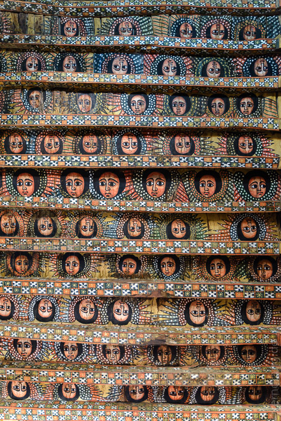
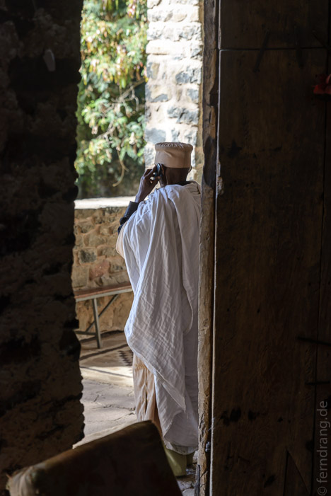
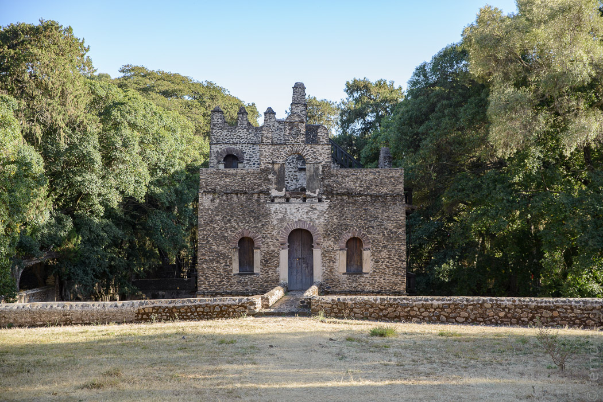

Mit dem Minibus sind wir weiter Richtung Norden nach Gonder gefahren. Der Bus holt uns am Guesthouse ab und dreht dann noch 45 Minuten seine Runde, um alle Sitze vollzukriegen. Dann wird es doch noch recht eng und kuschelig mit den Sitznachbarn.
Die Fahrt führt um den Tanasee herum, wenn auch leider außer Sichtweite. Aber auch hier ist die ländliche Szenerie sehr schön. So weit das Auge reicht, werden hier Felder bestellt - und zwar ausschließlich von Hand. Überall wird gesät oder geschnitten. Das geschnittene Getreide wird zu großen Bündeln geschnürt und von den Bauern vom Feld getragen. Überall sieht man diese laufenden Strohballen.
Nach guten vier Stunden erreichen wir Gonder, wo wir direkt von Jungs vom Gusthouse abgeholt werden. Gonder wirkt im Gegensatz zu Bahir Dar wie eine Bergstadt, obwohl es nicht viel höher liegt. Die Häuser sind herunter gekommen und erinnern etwas an Tibet. An der Piazza steht ein chinesisch anmutendes Hotel-Monster und ein dazu passendes Postamt-Monster. Darunter liegt das Tele-Café, in dem wir mehrfach ausruhen und Kaffee, Säfte und Tee trinken.
Die Burgen wollen wir uns in Ruhe für morgen aufheben und spazieren deshalb erst zu einer alten Kirche über dem Ort: Debre Berhan Selassie. Wie überall im Land ist der Eintritt mit umgerechnet 4€ vollkommen überzogen. Das kleine Gelände ist im hiesigen Stil von einer ziemlich großen Mauer mit zwölf Türmchen umgeben. Die Kirche ist winzig, eher eine Kapelle. Aber auch sie ist berühmt für ihre Malereien. Angeblich hat ein einziger Mönch sie in einem pausenlosen Rausch bemalt. Die Decke ist mit wiederholenden Reihen von äthiopischen Engelsgesichtern verziert. Überall im Land wird dieser ikonische Stil für Souvenirs kopiert.
  Unpraktischer Weise am anderen Ende der Stadt liegt ein Kaiser-Bad, das wie eine kleine Ausgabe des Gondor Castles aussieht. Noch unpraktischer ist, dass man dafür zwar ein Ticket braucht, welches man aber nicht dort kaufen kann.
"Yohannes Backpacker Guesthouse" ist leider noch im Bau und wir haben das Pech die dritten Gäste zu sein. Yohannes ist überaus nett und zeigt uns stolz seine Baustelle, auch das Badezimmer, wo er das kalte und heiße Wasser erwähnt. Nicht erwähnt er, dass das Wasser knapp ist und diesem Viertel nur in dreitägigem Wechsel zugeteilt wird. Heute sind nicht diese drei Tage. Wir bekommen Wasser gekocht und duschen aus dem Eimer. Fröhliche Weihnachten!